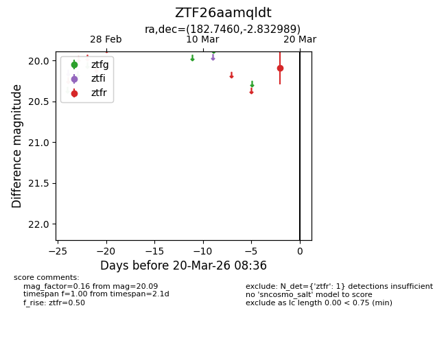
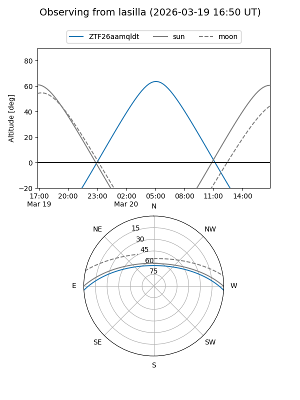
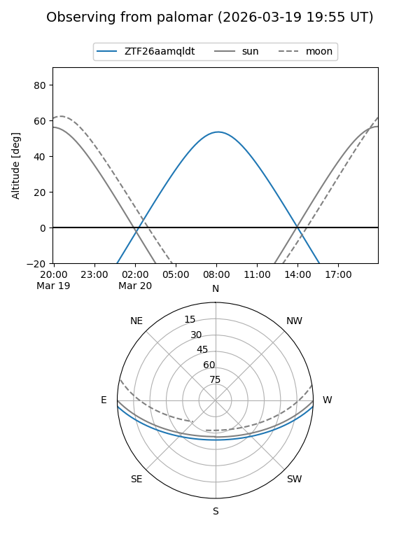

ZTF26aamqldt
Target ZTF26aamqldt at 2026-03-20 08:38
Aliases and brokers:
FINK: link
Lasair: link
ALeRCE: link
alt names
ZTF26aamqldt (ztf,fink_ztf)
Coordinates:
equatorial (ra, dec) = 182.7460,-2.83299
equatorial (HMS+DMS) = 12:10:59.03,-02:49:58.76
galactic (l, b) = (283.3246,+58.49028)
Flags:
Photometry:
last ztfr=20.09
1 ztfr detections
Lightcurve

Visibility


Additional plots